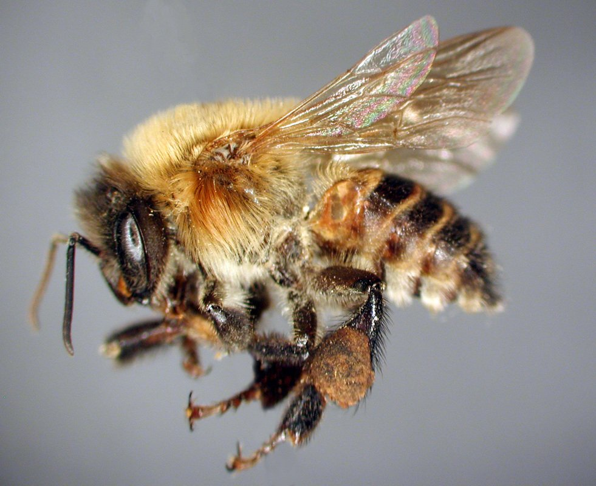

Por qué existe Xunaka.
No empezó como un producto de seguridad. Empezó como una pregunta sobre un robo real: colmenas de un banco genético de siete años, sustraídas de un parque en Mérida, con carpeta abierta en la Fiscalía.
Cada etapa de Xunaka se reformuló al encontrar evidencia que contradecía la anterior: un meliponicultor con catorce años de experiencia no necesita un sensor para su propia colonia — pero un programa que ya entregó 300 colonias a 80 familias sí necesita una forma de saber a cuál atender primero.
Hoy Xunaka es cuatro líneas sobre un mismo núcleo tecnológico, construidas sobre evidencia documentada, no sobre intuición.

Robótica de cosecha selectiva — descartada: campo internacional ya saturado y muy financiado.
Dispositivo antirrobo, motivado por el robo en Yumtsil — descartado como único eje: ningún sistema físico puede garantizar impedir un robo organizado.
Modelo de resiliencia: minimizar la pérdida catastrófica y preservar evidencia, incorporando el protocolo de mortandad por plaguicidas (Hopelchén).
Infraestructura de confianza: escalar la capacidad de atención de pocos expertos sobre muchas colonias, sin reemplazar su conocimiento.
Xunaka Atrae: el mismo hardware, reutilizado para detectar la captación de nuevos enjambres silvestres de forma no destructiva.